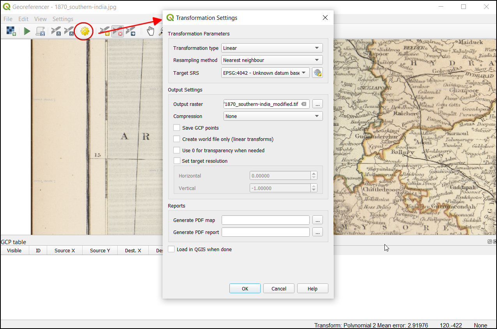
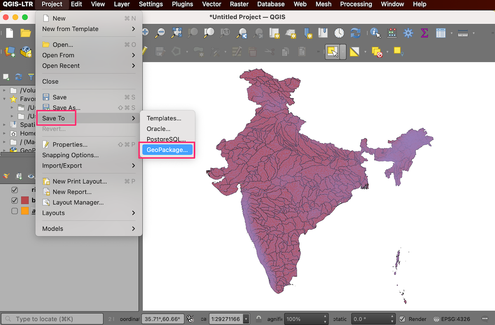
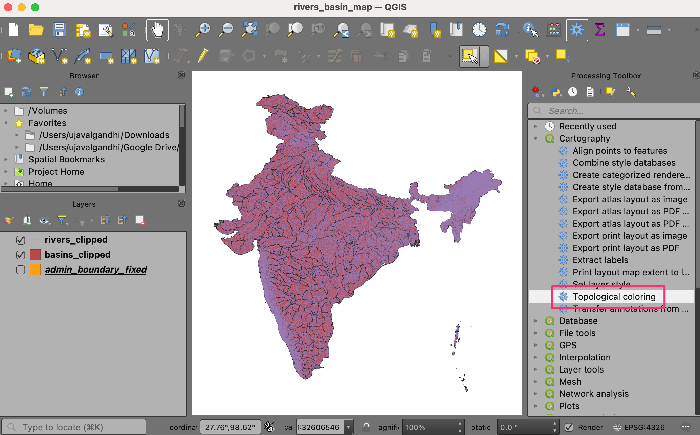

Georeferenciar Hojas Topográficas y Mapas Escaneados (QGIS3)¶
La mayoría de los proyectos SIG requiere la georeferenciación de algunos datos raster. La georeferenciación es el proceso de asignar coordenadas del mundo real a cada píxel del raster. Muchas veces estas coordenadas son obtenidas haciendo estudios de campo - colectando coordenadas con un dispositivo GPS para unas pocas entidades fácilmente identificables en la imagen o mapa. En algunos casos, donde buscas digitalizar mapas escaneados, puedes obtener las coordenadas de las marcad en la misma imagen del mapa. Usando estas coordenadas de muestra o PCTs (Puntos de Control del Terreno), la imagen es ajustada y se la hace coincidir dentro del sistema de coordenada elegido. En este tutorial discutiré los conceptos, estrategias y herramientas dentro de QGIS para alcanzar una georeferenciación de alta exactitud.
Este tutorial es para georeferenciar una imagen que tiene información de coordenadas disponible en la misma imagen del mapa (i.e., cuadrículas con etiquetas). Si su imagen fuente no tiene tal información, puede usar el método bosquejado en Georeferenciar Imágenes Aéreas (QGIS3)
Vista general de la tarea¶
Usaremos un mapa escaneado del sur de la India de 1870 y lo georeferenciaremos usando QGIS.
Otras habilidades que aprenderá¶
Como determinar el datum y sistema de coordenada para mapas antiguos.
Guarde el PCT creado.
Edite el PCT creado para realizar un ajuste fino.
Obtener los datos¶
El sitio web Hipkiss’s Scanned Old Maps tiene una excelente colección de mapas escaneados sin derechos reservados que uno puede usar para investigación.
Descargue el mapa 1870 del sur de la India y guárdelo como una imagen JPG en su disco duro.
Para su comodidad, puede descargar directamente una copia del conjunto de datos del siguiente enlace:
Procedimiento¶
Abra QGIS y haga clic en para abrir la herramienta.
Nota
From QGIS versions 3.26 onwards, the Georeferencer can be launched from .

El Georreferenciador está dividido en 2 secciones. La sección superior, donde se mostrará la imagen, y la sección inferior, donde aparecerá una tabla que muestra sus PCTs.

Ahora abriremos nuestra imagen JPG. Vaya a . Navegue a la imagen descargada del mapa escaneado y clic en Abrir.

Verá que la imagen se carga en la sección superior. Puede usar los controles de acercamiento/desplazamiento en la barra de herramientas para aprender más acerca del mapa.

Ahora necesitamos asignar coordenadas a algunos puntos en este mapa. Si mira de cerca, verá una cuadrícula de coordenada con marcas. Éstas son las líneas de cuadrícula Latitud y Longitud.

Antes de añadir Puntos de Control del Terreno (PCT), necesitamos definir los ajustes de transformación. Haga clic en el icono del engranaje en la ventana de georreferenciación para abrir el diálogo de ajustes de transformación.

En el cuadro de diálogo Configuración de la transformación, seleccione el Tipo de transformación como
Polinomio 2. Consulte la Documentación de QGIS para conocer los diferentes tipos de transformación y sus usos. A continuación, seleccione el Método de muestreo comoVecino más cercano. Haga clic en el botón Seleccionar SRC al lado de SRC Objetivo.

Si está georeferenciando un mapa escaneado como este, puede obtener la información de SRC del mismo mapa. Mirando nuestra imagen de mapa, las coordenadas son Latitud/Longitud. No se nos da información de datum, por lo que asumiremos una apropiada. Debido a que es India y el mapa es bastante antiguo, podemos apostar que el datum Everest 1830 nos daría buenos resultados. Busque
everesty seleccione el SRC con la definición más antigua para el datum Everest (EPSG:4042). Clic en Aceptar.

Nota
Las Cartas Survey of India Topo creadas entre el año 1960 y 2000 usan el esferoide Everest 1956 y el datum India_nepal. Si está georeferenciando Cartas SOI Topo, puede definir un SRC Personalizado en QGIS con los siguientes parámetros y usarlos en este paso. Esta definición incluye parámetros delta_x, delta_y y delta_z para transformar este datum a WGS84. Vea esta página para más información sobre el Sistema de Cuadrícula Indio.
+proj=longlat +a=6377301.243 +b=6356100.2284 +towgs84=295,736,257,0,0,0,0 +no_defs
Nota
La mayoría de los mapas son creados usando un SRC Proyectado. Si el mapa que intenta georeferenciar usa un SRC proyectado que conoce, pero las etiquetas de gratícula están en un SRC Geográfico (latitud/longitud), puede usar un flujo de trabajo alternativo para minimizar la distorsión. Use en vez un SRC Geográfico como el que estamos usando aquí, puede crear una cuadrícula vector en QGIS y transformarla al SRC proyectado a ser usado como referencia para una captura exacta de coordenada. Vea esta página para más detalles.
Name your output raster as
1870_southern_india_modified.tif. ChooseLZWas the Compression. Check the Save GCP points to store the points as seperate file for future purpose. Make sure the Load in QGIS when done option is checked. Click OK.

Nota
Los archivos GeoTIFF sin comprimir pueden tener un tamaño muy grande. Así que comprimirlos es siempre una buena idea. Puedes aprender más sobre las diferentes opciones de compresión de TIFF (LZW, PACKBITS o DEFLATE) en este artículo.
Now we can start adding the Ground Control Points (GCP). Click on the Add Point button.

Ahora coloque la mira en las intersecciones de las líneas de la cuadrícula y haga clic con el botón izquierdo del ratón, esto servirá como la verdad del suelo en nuestro caso. Como las líneas de la cuadrícula están etiquetadas, podemos determinar las coordenadas X e Y de los puntos con ellas. En la ventana emergente, introduzca las coordenadas. Recuerde que X=longitud e Y=latitud. Haga clic en Aceptar.

Notará que la tabla PCT ahora tiene una fila con detalles de su primer PCT.

Similarly, add more GCPs covering the entire image. The more points you have, the more accurate your image is registered to the target coordinates. The
Polynomial 2transform requires at least 6 GCPs. Once you have added the minimum number of points required for the transform, you will notice that the GCPs now have a non-zerodX,dYandResidualerror values. If a particular GCP has unusually high error values, that usually means a human-error in entering the coordinate values. So you can delete that GCP and capture it again. You can also edit the coordinate values in the GCP Table by clicking the cell in either Dest. X or Dest. Y columns.

Una vez que esté satisfecho con los PCTs, haga clic en el botón Iniciar Georeferenciación. Esto iniciará el proceso de deformación de la imagen utilizando los PCTs y creando el ráster de destino.

Una vez finalizado el proceso, verá la capa georreferenciada cargada en QGIS. La georreferenciación ha finalizado. Además, observará que el SRC del proyecto en la parte inferior derecha está ajustado a EPSG:4042, tal y como se describe en Configuración de la transformación.

Drag and drop the
OpenStreetMapas Base Map from the XYZ Tiles dropdown at the bottom of the Browser panel to verify the georeferenced layer. To set the transparency, click on the Open layer styling panel icon and select Transparency tab. Set the transparency to40 %. Now the georeferenced image must overlay with the basemap outline.

Si la georreferenciación necesita más ajustes, podemos partir de los puntos PCT recogidos. Busque la ubicación del archivo
1870_southern_india_modified.tif. Encontrará un archivo adicional,1870_southern_india_modified.tif.points. Este archivo contendrá la información de los puntos PCT.

{kind=link}
{kind=link}
Abra la herramienta de georreferenciación en QGIS, haga clic en , y seleccione el 1870_southern_india_modified.tif.points. Esto cargará el PCT creado anteriormente. A continuación, cargue el
1870_southern_india_modified.tifpara afinar su trabajo.
